Die Märzrevolution 1848 – Freiheit, Einheit und die Paulskirche – Lesespurgeschichte mit Rätselaufgaben (Klasse 8)
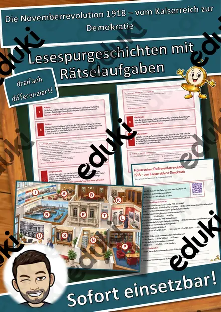
Die Novemberrevolution 1918 – vom Kaiserreich zur Demokratie – Lesespurgeschichte mit Rätselaufgaben (Klasse 9)
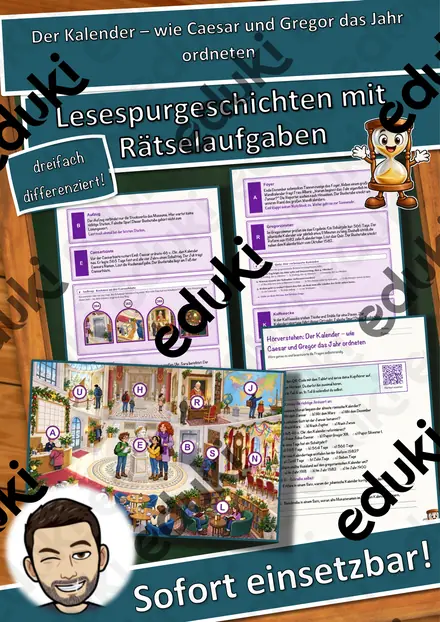
Der Kalender – wie Caesar und Gregor das Jahr ordneten – Lesespurgeschichte mit Rätselaufgaben (Klasse 7)

Der Mann aus dem Eis – ein Gletscherfund aus der Jungsteinzeit – Lesespurgeschichte mit Rätselaufgaben (Klasse 6)

Die Saturnalien – das Winterfest der Römer – Lesespurgeschichte mit Rätselaufgaben (Klasse 6)
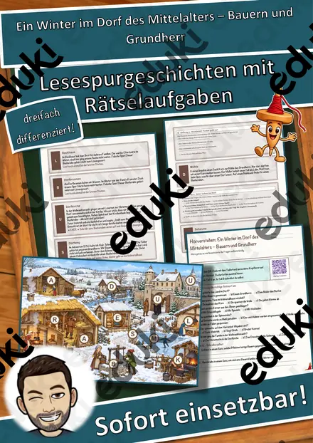
Ein Winter im Dorf des Mittelalters – Bauern und Grundherr – Lesespurgeschichte mit Rätselaufgaben (Klasse 7)
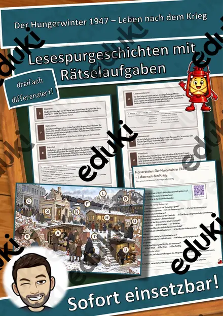
Der Hungerwinter 1947 – Leben nach dem Krieg – Lesespurgeschichte mit Rätselaufgaben (Klasse 9)
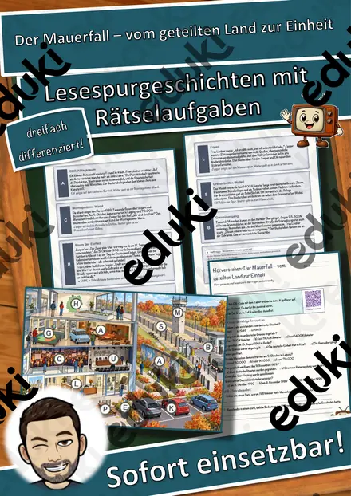
Der Mauerfall – vom geteilten Land zur Einheit – Lesespurgeschichte mit Rätselaufgaben (Klasse 10)
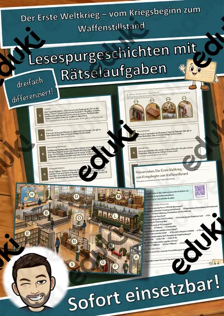
Der Erste Weltkrieg – vom Kriegsbeginn zum Waffenstillstand – Lesespurgeschichte mit Rätselaufgaben (Klasse 9)

Die Kelten – Leben in einem keltischen Dorf – Lesespurgeschichte mit Rätselaufgaben (Klasse 6)
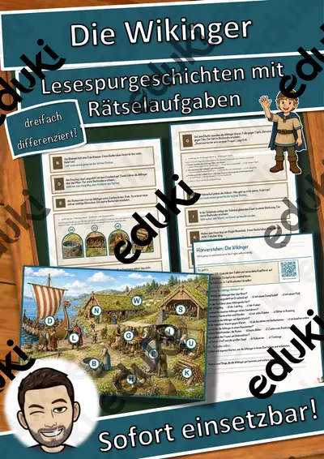
Die Wikinger – Lesespurgeschichte mit Rätselaufgaben (Klasse 6)
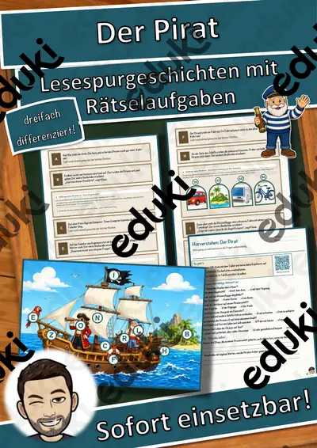
Der Pirat – Ein Abenteuer auf hoher See – Lesespurgeschichte mit Rätselaufgaben (Klasse 5)

Das Automobil – Lesespurgeschichte mit Rätselaufgaben (Klasse 8)
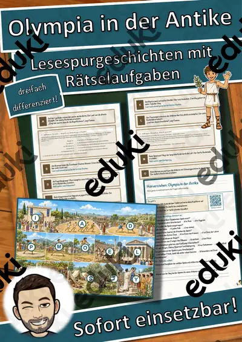
Olympia in der Antike – Lesespurgeschichte mit Rätselaufgaben (Klasse 7)

Die Weimarer Republik – Lesespurgeschichte mit Rätselaufgaben (Klasse 8)
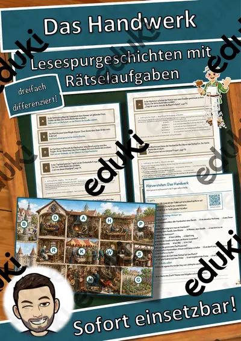
Das Handwerk und die Zünfte – Lesespurgeschichte mit Rätselaufgaben (Klasse 7)
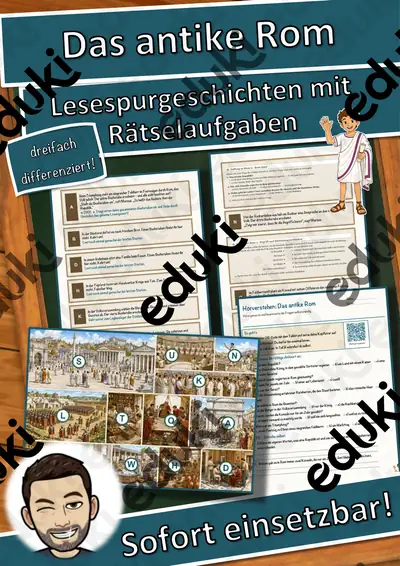
Das antike Rom – die Republik – Lesespurgeschichte mit Rätselaufgaben (Klasse 7)
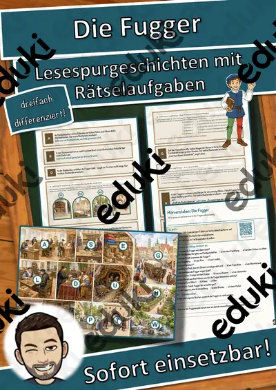
Die Fugger – Kaufleute und Bankiers – Lesespurgeschichte mit Rätselaufgaben (Klasse 7)

Die Eisenbahn verändert das Land – Lesespurgeschichte mit Rätselaufgaben (Klasse 8)

Die Französische Revolution – Lesespurgeschichte mit Rätselaufgaben (Klasse 8)

Das Deutsche Kaiserreich – Lesespurgeschichte mit Rätselaufgaben (Klasse 8)

Die Industrialisierung – Lesespurgeschichte mit Rätselaufgaben (Klasse 8)
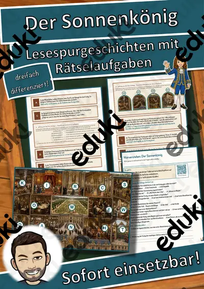
Der Sonnenkönig – Lesespurgeschichte mit Rätselaufgaben (Klasse 7)
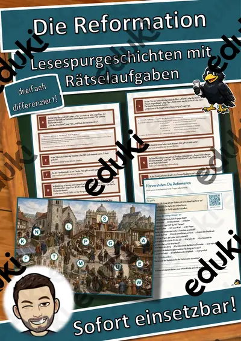
Die Reformation – Lesespurgeschichte mit Rätselaufgaben (Klasse 7)
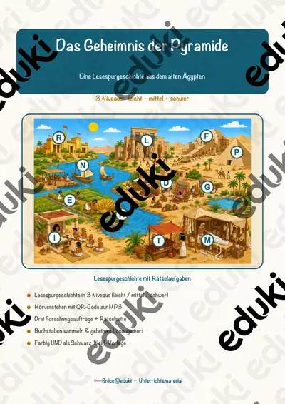
Das Geheimnis der Pyramide (Ägypten) – Lesespurgeschichte mit Rätselaufgaben (Klasse 5)
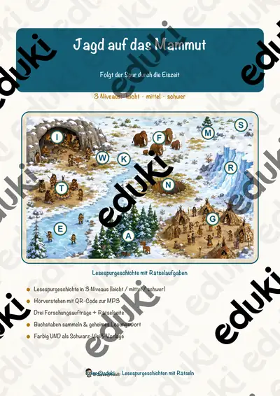
Jagd auf das Mammut – Lesespurgeschichte mit Rätselaufgaben (Klasse 5)
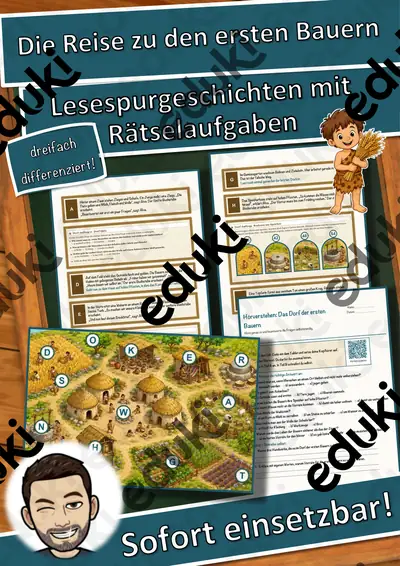
Die Reise zu den ersten Bauern – Lesespurgeschichte mit Rätselaufgaben (Klasse 5)

Die Olympischen Spiele sind in Gefahr – Lesespurgeschichte mit Rätselaufgaben (Klasse 6)

Das Labyrinth des Minotaurus – Lesespurgeschichte mit Rätselaufgaben (Klasse 6)

Die Mission auf dem Olymp – Lesespurgeschichte mit Rätselaufgaben (Klasse 6)

Das Geheimnis der Römerstadt – Lesespurgeschichte mit Rätselaufgaben (Klasse 6)

Das Geheimnis der Ritterburg – Lesespurgeschichte mit Rätselaufgaben (Klasse 6)
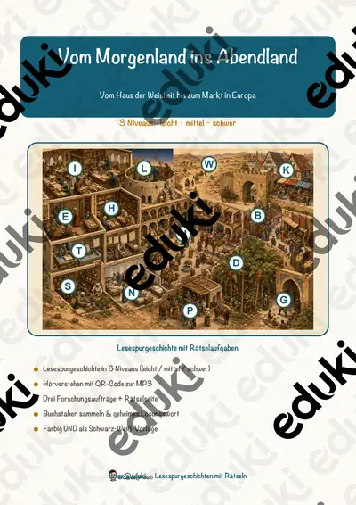
Vom Morgenland ins Abendland – Lesespurgeschichte mit Rätselaufgaben (Klasse 6)
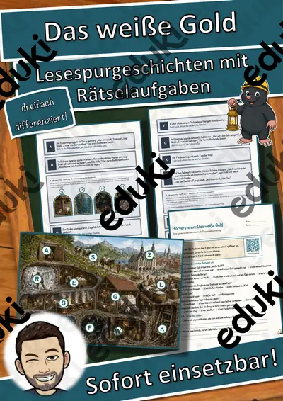
Das weiße Gold – Lesespurgeschichte mit Rätselaufgaben (Klasse 6)
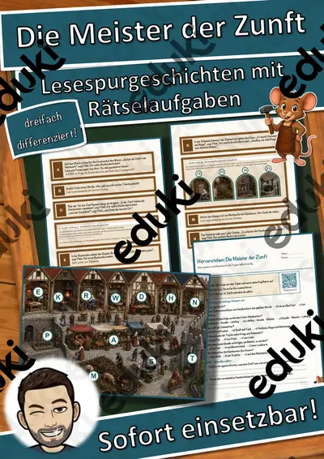
Die Meister der Zunft – Lesespurgeschichte mit Rätselaufgaben (Klasse 6)
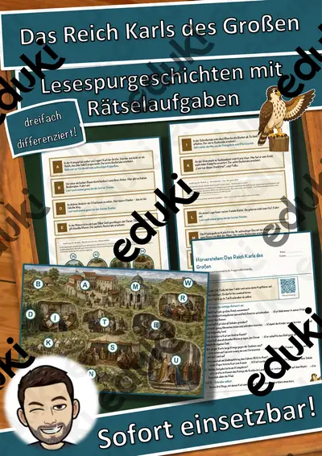
Das Reich Karls des Großen – Lesespurgeschichte mit Rätselaufgaben (Klasse 6)
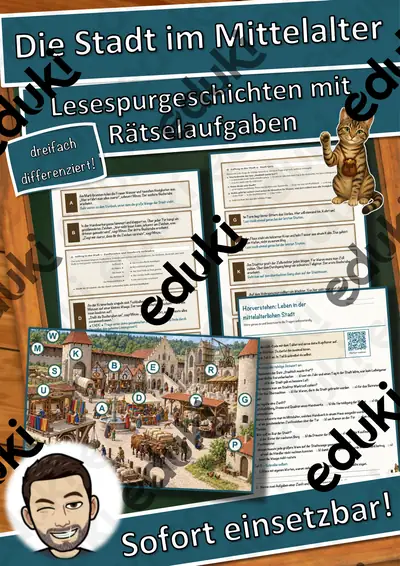
Die Stadt im Mittelalter – Lesespurgeschichte mit Rätselaufgaben (Klasse 6)
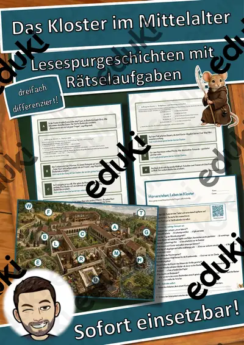
Das Kloster im Mittelalter – Lesespurgeschichte mit Rätselaufgaben (Klasse 6)
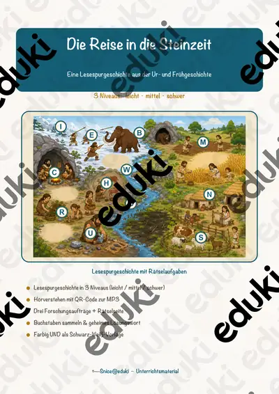
Die Reise in die Steinzeit – Lesespurgeschichte mit Rätselaufgaben (Klasse 5)
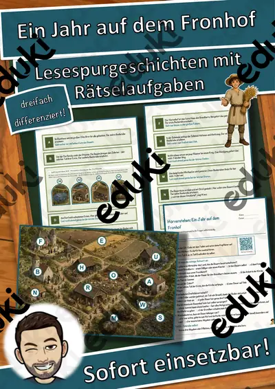
Ein Jahr auf dem Fronhof – Lesespurgeschichte mit Rätselaufgaben (Klasse 7)
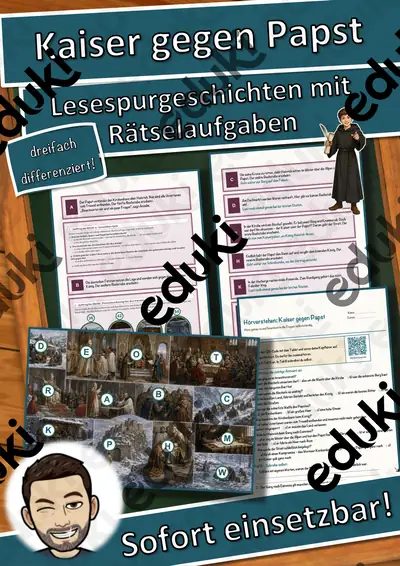
Kaiser gegen Papst – Lesespurgeschichte mit Rätselaufgaben (Klasse 7)
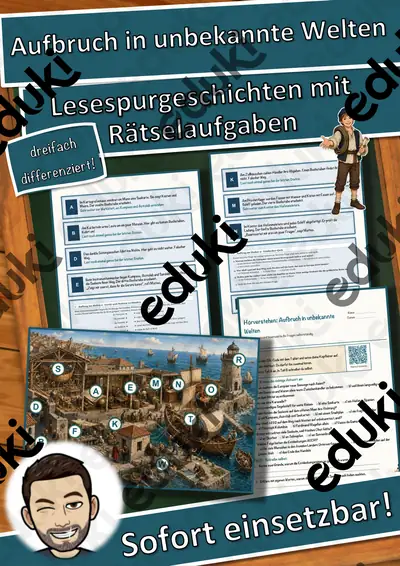
Aufbruch in unbekannte Welten – Lesespurgeschichte mit Rätselaufgaben (Klasse 7)
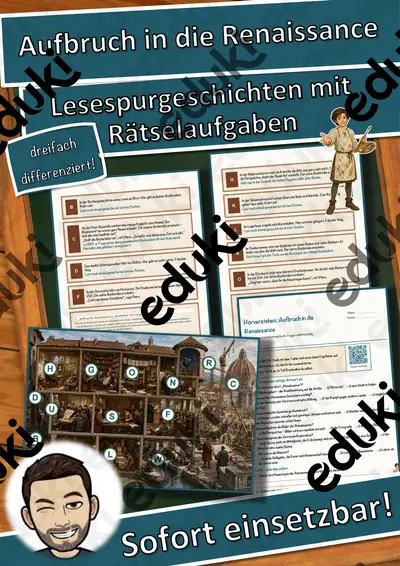
Aufbruch in die Renaissance – Lesespurgeschichte mit Rätselaufgaben (Klasse 7)
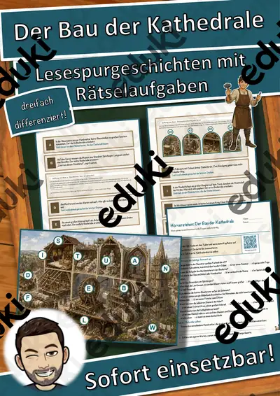
Der Bau der Kathedrale – Lesespurgeschichte mit Rätselaufgaben (Klasse 7)
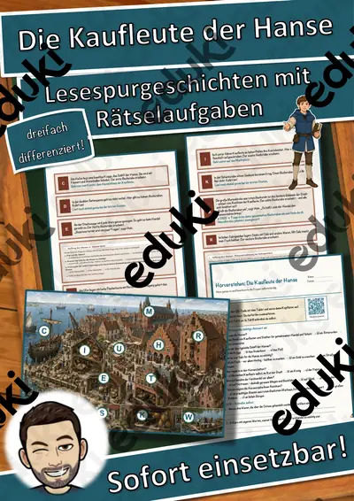
Die Kaufleute der Hanse – Lesespurgeschichte mit Rätselaufgaben (Klasse 7)

Die Kreuzzüge – Prüfungstraining Geschichte (Klasse 8)

Die Aufklärung – Prüfungstraining Geschichte (Klasse 8)
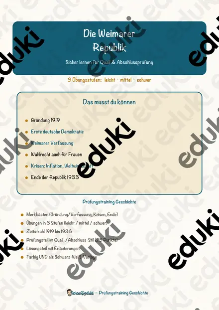
Die Weimarer Republik – Prüfungstraining Geschichte (Klasse 9)
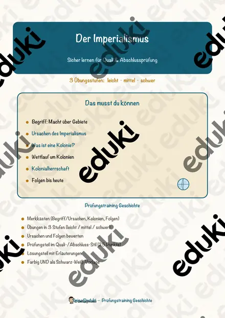
Der Imperialismus – Prüfungstraining Geschichte (Klasse 9)

Der Absolutismus – Prüfungstraining Geschichte (Klasse 8)
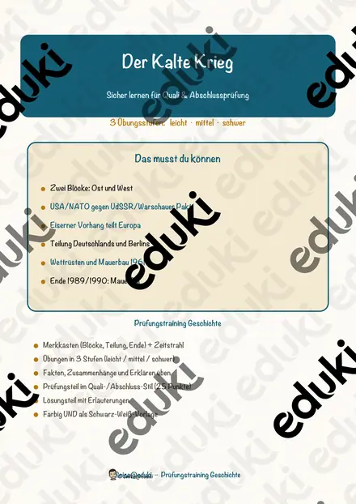
Der Kalte Krieg – Prüfungstraining Geschichte (Klasse 10)
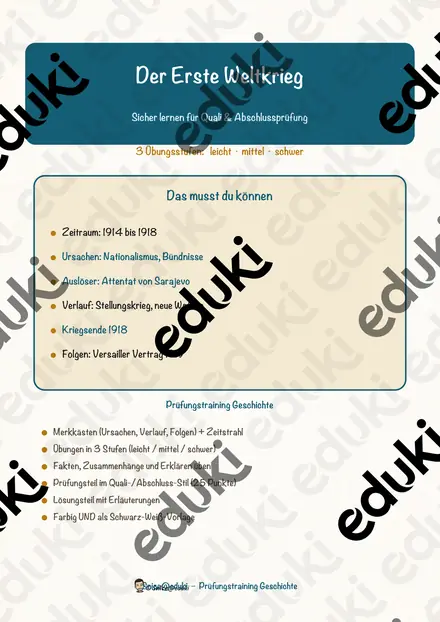
Der Erste Weltkrieg – Prüfungstraining Geschichte (Klasse 9)

Die Französische Revolution – Prüfungstraining Geschichte (Klasse 8)

Die Industrialisierung – Prüfungstraining Geschichte (Klasse 8)

Artemis - Griechische Götter - Lückentext mit Wortspeicher

Maifeiertag - Tag der Arbeit Lückentext mit Wortspeicher

Altsteinzeit Lückentext mit Wortspeicher Hörverstehen und Suchsel

Hestia - Griechische Götter - Lückentext mit Wortspeicher

Materialpaket Griechische Götter - Lückentexte mit Wortspeicher, Plakate und Ausmalbilder

Zeus - Griechische Götter - Lückentext mit Wortspeicher

Poseidon - Griechische Götter - Lückentext mit Wortspeicher

Hermes - Griechische Götter - Lückentext mit Wortspeicher

Hephaistos - Griechische Götter - Lückentext mit Wortspeicher

Demeter - Griechische Götter - Lückentext mit Wortspeicher

Aphrodite - Griechische Götter - Lückentext mit Wortspeicher

Sprechstunde - Mittelalter - Zeit und Wandel - Lass uns reden

Sprechstunde - Leben im Mittelalter - Burgen, Klöster, Ständegesellschaft - Lass uns reden

Suchsel Ukraine - differenziert (Buchstabengitter)

Materialpaket Steckbriefe Bundeskanzler #demokratiestärken

Steckbrief Bundeskanzler (Gerhard Schröder)

Steckbrief Bundeskanzler (Helmut Kohl)

Steckbrief Bundeskanzler (Helmut Schmidt)

Steckbrief Bundeskanzler (Willy Brandt)

Steckbrief Bundeskanzler (Kurt Georg Kiesinger)

Steckbrief Bundeskanzler (Ludwig Erhard)

Steckbrief Bundeskanzler (Konrad Adenauer)

Was sind Verschwörungstheorien? - Homeschooling #demokratiestärken

Zeitstrahl Geschichte (ohne Pinguine) - 4,20 Meter lang - Klassenzimmergestaltung

Zeitstrahl Geschichte

Tafelmaterial Ägypten

Ägypten - Suchspiel inkl. Lösung (auch Homeschooling)
Keine Materialien gefunden – versuch einen anderen Suchbegriff oder Filter.